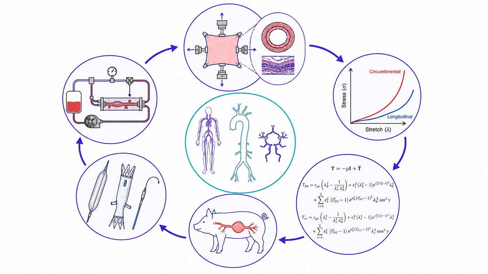
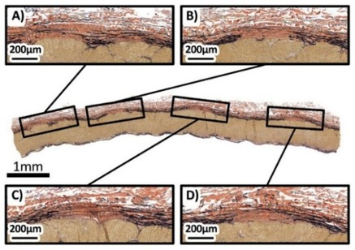
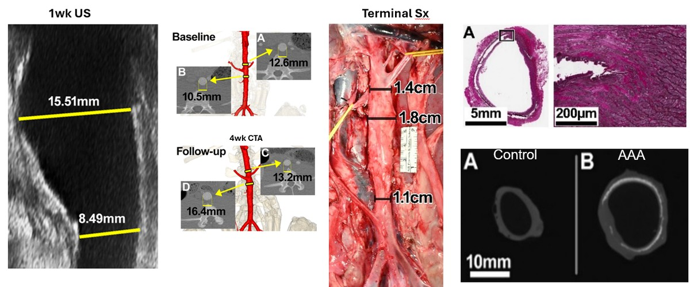
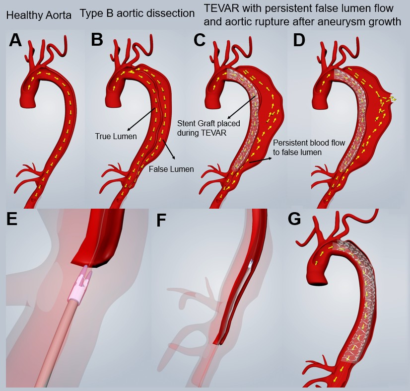
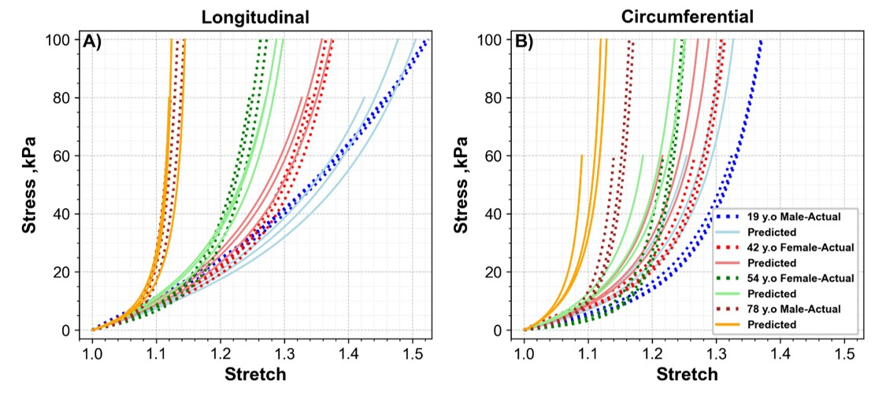
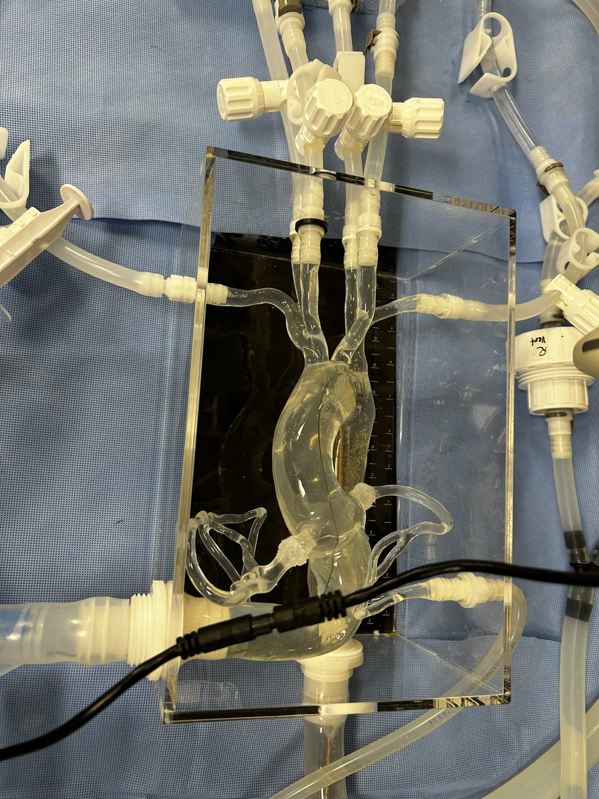
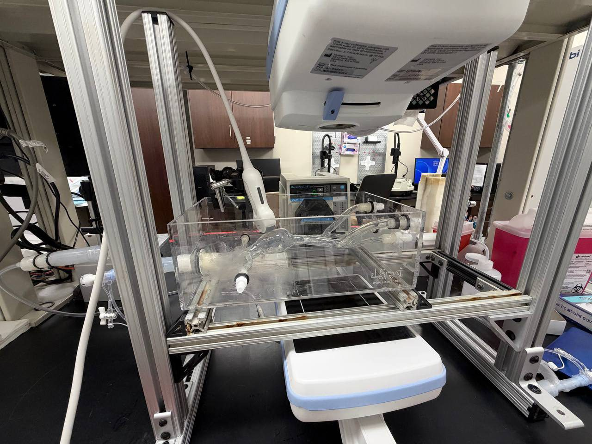
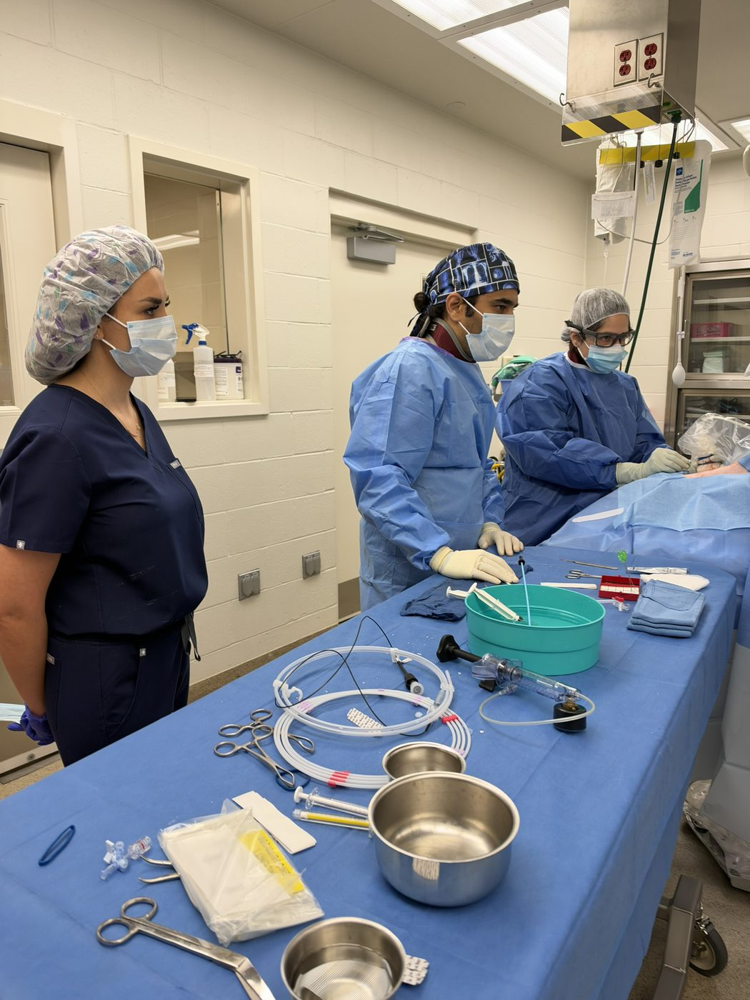
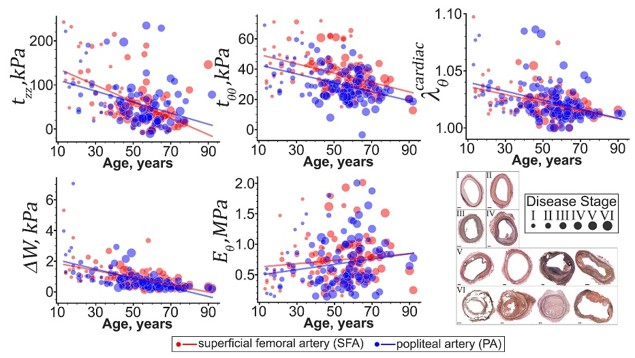
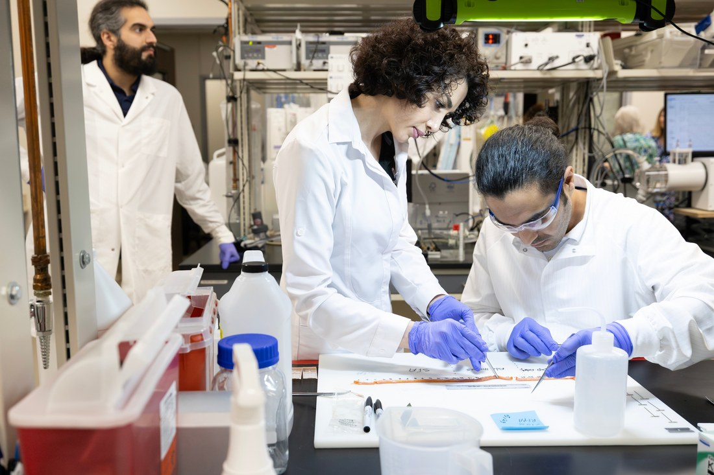

I am an Assistant Professor in the Department
of Biomechanics at the University of Nebraska Omaha (UNO). I am also Co-Founder and CEO of
Aquablade Vascular, an early-stage medical device company.
Our goal is to understand how human blood vessels function and fail, and to develop tools,
devices, and therapies that improve cardiovascular and cerebrovascular care. We take a
multidisciplinary approach that spans experimental biomechanics, imaging, computational
modeling, and close work with clinicians. We characterize the biomechanics of human blood
vessels and other soft tissues, including the heart, in health and disease, and use what we
learn to guide the design and evaluation of new devices and treatments. This includes benchtop testing
under physiologically relevant conditions, computational models that predict how vessels and
tissues respond to disease, treatment, and implanted devices, and machine learning applied to
large experimental datasets.
We work closely with vascular surgery, cardiothoracic surgery, neurosurgery, and pathology at
the University of Nebraska Medical Center, with Live On Nebraska, and with medical device
companies.
I received my Ph.D. in Mechanical Engineering from the University of Nebraska-Lincoln, with a
minor in business administration, and a B.Sc. in Mechanical Engineering from Isfahan University
of Technology with a double major in Industrial Engineering and Systems Management. I trained
in the Department of Surgery at the University of Nebraska Medical Center before joining UNO in
2021.

Research areas in my lab, spanning structural and biomechanical characterization of cadaveric
human and animal tissue, mechanical testing, constitutive and computational modeling,
benchtop testing, large animal studies, and medical device development for cardiovascular and
cerebrovascular disease.
Research
Elastic Fiber Remodeling in Aging Arteries
Arterial stiffness is a major determinant of cardiovascular health. Elastic fibers are key
contributors, providing the compliance required to withstand cyclic loading. With aging,
mechanical loading progressively degrades the elastic fibers, leading to vascular stiffening
and cardiovascular pathologies. Because elastic fibers turn over slowly, adult arteries are
generally viewed as having limited capacity to restore organized elastic structure, and
arterial aging is treated as a one-way process of mechanical degradation.
Our multiscale biomechanical evaluations of human femoropopliteal arteries challenge this view.
We identified focal discontinuities in the external elastic lamina in donors both young and
old, often containing thin elastic fibers with histologic and molecular features consistent
with localized elastic-matrix remodeling. We combine structural analysis, spatial
transcriptomics, bioinformatics, biomechanical testing, and controlled-loading experiments to
study this remodeling.

Longitudinal VVG-stained section from a healthy 21-year-old male donor showing multiple
breaks in the external elastic lamina with different fiber structure (elastin in black).
Abdominal Aortic Aneurysm
Abdominal aortic aneurysm is a progressive dilation of the aorta that is usually silent, and
rupture is fatal in most cases. Most aneurysms are too small for repair, so patients spend
years under surveillance with no treatment available to slow growth.
We developed a large animal model of aortic aneurysm in swine, created entirely
endovascularly by delivering a proteolytic cocktail into the aortic wall, without any open
surgery. The model reproduces the medial degeneration,
calcification, and mechanical changes seen in human disease. We use it together with complex
benchtop setups to develop novel devices and materials for aneurysm monitoring and repair.

Endovascular swine aneurysm model: one-week ultrasound, baseline and four-week CT
angiography, terminal surgery, and histology and micro-CT of the aneurysmal wall.
Aortic Dissection
Chronic Type B aortic dissection is a lethal condition in which the long-term outcome of
thoracic endovascular aortic repair is often limited by persistent false lumen perfusion,
driven by a stiff, fibrotic dissection septum. Clinical evidence suggests that adjunctive
aortic septotomy, the longitudinal transection of the septum to create a single unified aortic
channel, can be important for durable repair. Clinicians currently lack a purpose-built device
and must rely on improvised tools that carry risks of uncontrolled tearing or collateral
thermal injury to the aorta and existing stent-grafts.
We are developing a catheter for endovascular septotomy that addresses the
limitations of
current improvised techniques, and validating it on the benchtop and in a porcine model.

Chronic Type B aortic dissection and the limitation of TEVAR (A–D), and endovascular
septotomy, which divides the septum into a single channel and allows the aorta to remodel
after repair (E–G).
Machine Learning and Computational Modeling
We build machine learning and statistical models on large human tissue datasets to identify
the factors that drive vascular disease and how they interact. We also develop elastic and
viscoelastic models that describe how blood vessels behave under different loading conditions.

Machine learning prediction of longitudinal and circumferential stress–stretch response
(solid lines) against measured data (dotted lines) for four donors of different age and sex.
Increased Intracranial Pressure (ICP) Management
Elevated intracranial pressure following traumatic brain injury, intracerebral hemorrhage, or
stroke is a major cause of death and disability. When standard management fails, the remaining
option is decompressive craniectomy, which is effective but carries substantial morbidity and
requires open neurosurgical capability. With neurosurgery colleagues at the University of
Nebraska Medical Center, we are developing endovascular approaches to reduce
intracranial pressure without open cranial surgery, using large animal models, benchtop systems, and
computational modeling of cerebral hemodynamics and cerebrospinal fluid dynamics.
Benchtop and Large Animal Model Studies Evaluating Cardiovascular and Neurovascular Devices
Before a new device reaches patients, it has to be shown to work, and to be safe, under the
anatomy, flow, and pressures it will face in the body. We build benchtop platforms that
reproduce these conditions, including physiologic pulsatile flow loops, anatomically accurate
vascular phantoms, simulated aortic dissection and aneurysm models, and perfused tissue, and
use them to compare devices and techniques on the same endpoints under fluoroscopy, ultrasound,
and intravascular imaging. Promising approaches then move into large animal studies in swine
and sheep, performed with our vascular surgery and neurosurgery collaborators, to test devices
for different cardiovascular and neurovascular applications. We also work with medical device companies on preclinical
testing of their technologies.



Left: transparent aortic phantom in a pulsatile benchtop flow loop. Middle: benchtop test
rig set up for image-guided device testing. Right: lab members preparing for a large animal
endovascular study.
Biomechanics and Pathophysiology of Peripheral Arterial Disease
Peripheral arterial disease is systemic atherosclerosis affecting the arteries that supply the
lower extremities. Systemic risk factors such as
age, diabetes, and smoking play a significant role in its pathophysiology, but lesions distribute unevenly along the
femoropopliteal artery and often co-localize with the adductor hiatus and the popliteal artery
below the knee, where the vessel deforms most severely during locomotion. Using human arteries
from donors of all ages, we combine intravascular ultrasound, micro-CT, biaxial mechanical
testing, constitutive modeling, tissue proteomics, and machine learning to determine how
patient risk factors, local biomechanics, and vascular wall biology together shape where and
how severely disease develops.

Age-related changes in physiologic longitudinal and circumferential stress, stretch, strain
energy, and circumferential stiffness in human superficial femoral (red) and popliteal
(blue) arteries. Marker size indicates the stage of arterial disease.
Vascular Biomechanics in Pregnancy
Hypertensive disorders of pregnancy are a significant cause of maternal and fetal
complications, and patients at risk are difficult to identify early. Working with clinicians at
the University of Nebraska Medical Center and Children's Nebraska, we study the biomechanics of
placental and umbilical vessels and how the maternal vasculature remodels during pregnancy,
with the aim of earlier detection and new treatment targets.
Tools for Medical Image Analysis
We develop automated pipelines and software for analyzing medical images, including whole-slide
histology and CT angiography data, and release them for the research community.
For preclinical evaluation studies and clinical or industry collaborations, contact me at the
same address.
Trainees

Bahman (Pedram) Kargarbahrkhazar, Ph.D. student
Adisu Mengesha Assefa, Ph.D. student
Sanaz Farmani, M.S. student
Aurshon Bavari, undergraduate researcher
Alumni
Sayed Ahmadreza Razian, Ph.D. (co-supervised)
Elham Zamani, M.S.
Madihah Kazim, M.S.
Nicholas Kinsella, undergraduate researcher
Connor Tiedtke, undergraduate researcher
Hesan Sedaghat, undergraduate researcher
Elias Pipinos, undergraduate researcher
In memory of Ali Zolfaghari Sichani, a doctoral student in our group, who died
in July 2024. The Department of Biomechanics awards the
Ali
Zolfaghari Sichani Memorial Scholarship each year in his honor.
Outreach and Service
Reviewer for NIH, NSF, and scientific journals and conferences
Organizing committee member, Great Plains Biomechanics Conference, 2022–2026
Advisor, Biomechanics United Student Group, University of Nebraska Omaha
Organized or assisted with more than 20 outreach activities for middle school, high school,
and undergraduate students